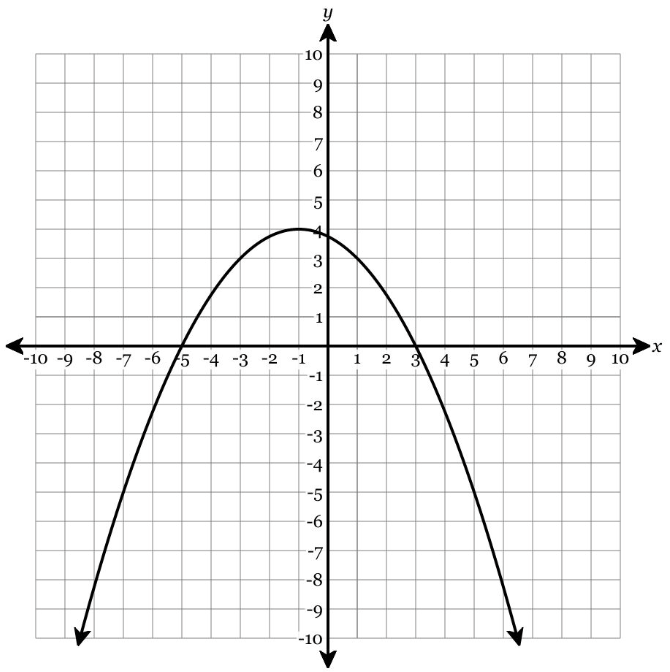

Show work and mark answers clearly.
1.
Write a quadratic equation in vertex/graphing form for a parabola with vertex \((3,-5)\) that passes through \((5,3)\).
- Start with \(y=a(x-h)^2+k\).
- Find \(a\).
- Write the final equation.
- State whether the graph opens up or down.
Show work and mark answers clearly.
1.
Write a quadratic equation in intercept/factored form with zeros \(-2\) and \(6\) that passes through \((0,-24)\).
- Start with \(y=a(x-p)(x-q)\).
- Find \(a\).
- Write the equation in intercept form.
- Rewrite it in standard form.
Show work and mark answers clearly.
1.
Rewrite each equation in standard form. Then state one feature that was easier to see before rewriting.
- \(y=2(x-3)^2+5\)
- \(y=-(x+4)(x-1)\)
- \(y=\frac12(x+2)^2-8\)
Show work and mark answers clearly.
1.
The table shows a quadratic relationship.
- Find the first and second differences.
- Determine \(a\).
- Use standard form to write an equation.
- Explain how the table shows the relationship is quadratic.
Show work and mark answers clearly.
1.
Use the graph to choose an efficient starting form and write an equation.

- Which feature is easiest to read first: vertex, zeros, or y-intercept?
- Choose vertex/graphing form, standard form, or intercept/factored form.
- Write a possible equation.
- Explain why that form was efficient.
Show work and mark answers clearly.
1.
A quadratic has vertex \((-1,4)\) and also passes through \((1,-4)\).
- Write the equation in vertex/graphing form.
- Find another point using symmetry.
- Rewrite the equation in standard form.
- Identify the y-intercept from your standard form.